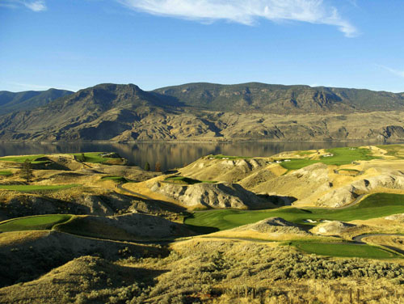

{kind=link}
{kind=link}
{kind=link}
Kamloops Golf Course
Located only ten minutes away, the Tobiano Golf Course has been challenging and captivating our guests. Set upon the rolling bluffs and ravine-cut canyons overlooking spectacular Kamlooops Lake, Tobiano was designed by Tom McBroom, Canada's premier golf architect. Tobiano is a par 72, 18-hole championship resort course playing 7,328 yards from the pro tees. The enticing front nine, complete with arid clay bank dunes and benchlands, blends perfectly with the bluffs and sentinel hoodoos on the back nine. For more information and to book a tee off time you can call toll free at 1.877.373.2218 or visit Tobiano Golf.
The Kamloops area also offers the following diverse and challenging golf experiences to golfers of all abilities. These golf courses are half an hour to 50 minutes away from Lakeside Country Inn.
Aberdeen Hills Golf Links
Featuring panoramic views of the valley from most every hole, Aberdeen Hills Golf Course is conveniently located in Kamloops' southwest shopping district, just off the Trans Canada Highway, about half an hour from Savona. Perched high up on the hills overlooking Kamloops, the Aberdeen Hills Golf Links offers a unique golfing experience. Measuring just over 6000 yards from the white tees and 5358 yards from the red tees, this 18 hole par 71 course caters to golfers of all skill types. Full facilities. Phone: (250) 828.1149 or (250) 828.1143.
Mt. Paul Golf Course
Mr. Paul Golf Course is located 3 minutes from downtown Kamloops. An executive nine-hole course (5 par 4s / 4 par 3s) that was designed to provide golfers of all ability levels with a relaxing yet challenging experience. The facilities include a covered driving range, large practice chipping area and practice putting green, a pro shop, and restaurant. Phone: (250) 374.4653.
Sun Rivers Golf Course
Sun Rivers Golf Course is located just north of Kamloops, off the Yellowhead Highway, about half an hour from Savona. This is Kamloops' newest 18-hole Graham Cooke designed course. Set amongst sage and rolling hills, the challenging layout is enhanced by sweeping views of the city. Phone: 1.866.571.7888
Kamloops Golf & Country Club
It's a walk in the park — serene and challenging. 18 hole championship, semi-private course and full facilities. Yardage lengths: red 5,678, white 6,383 and blue 6,682. Discuss your round over a cool drink and enjoy a light lunch or dinner at the club. Phone: (250) 376.3231.
The Dunes at Kamloops
The Dunes at Kamloops is an exciting Graham Cooke design that first opened in midsummer 1996. The championship layout has yardage ranging from 5,400 to 7,100 offering an enjoyable challenge for golfers of all abilities. The immaculately groomed 18-hole par 72 facility sits in a picturesque river valley location 15 minutes from downtown Kamloops. Complementing the course are a full-service food and beverage operation and a practice facility. Phone: 1.888.881.4653 or (250) 579.3300
Pineridge Golf Course
Pineridge Golf Course is about 10 minutes east of the Kamloops outskirts, just off the Trans Canada. Built in 1989, Pineridge offers a high quality game of golf at an affordable price. Pineridge boasts 18 challenging holes of golf, each having its own unique character. There are sculpted greens, strategically placed sand and water, elevated greens, uphill and downhill lies as well as spectacular views of the Thompson River valley. Pineridge takes advantage of its unique terrain to create a lush, rolling, green oasis in the desert. Full facilities. Phone: (250) 573.4333.
Eagle Point Golf Course
Eagle Point Golf and Country Club is in Barnhartvale, 15 minutes east of Kamloops. Nestled amongst a ponderosa pine forest, this championship public golf course offers a spacious and picturesque layout with magnificent scenery from tee to green. The 18 hole par 72, that opened its doors for play in 1991, can be played from 4 yardage lengths: red 5,319, white 6,006, gold 6,349 and blue 6,762. Complete facilities. Phone: 1.888.863.2453 or (250) 573.2453.
Rivershore Estates & Golf Links
Rivershore Estates & Golf Links is one of only 3 courses in all Canada to be designed by the legendary Robert Trent Jones Sr. Located 15 minutes east of Kamloops outskirts, this award winning championship golf course has hosted numerous amateur and professional provincial and national; men's and ladies' golf championships. Rivershore has received a four star and outstanding rating from Golf Digest and is known for its design variety, conditioning and ability to provide a memorable golf experience for players of all abilities. Phone: (250) 573.4622.